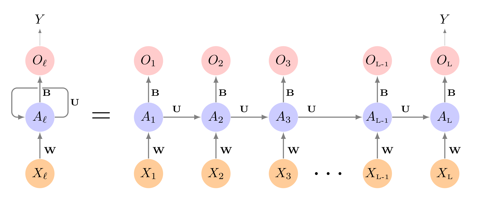
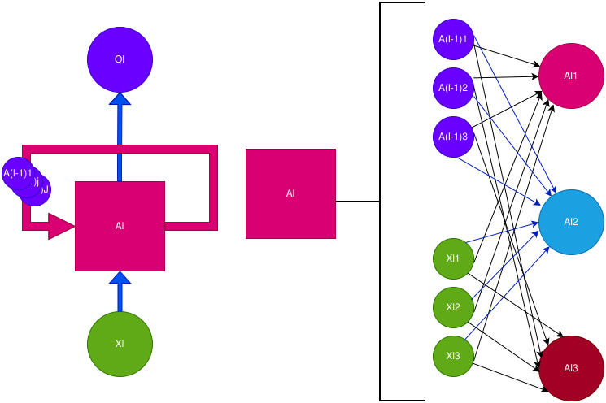
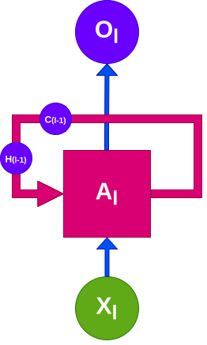
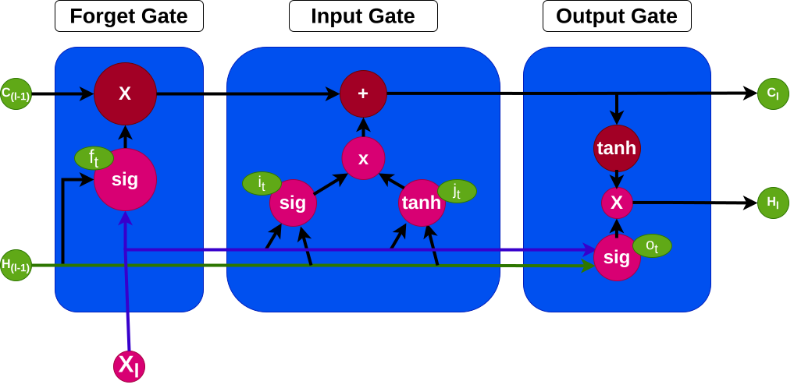

Long Short-term
Memory
Here is the complete R Code File
Sequential Data
Long Short-term Memory
Predicting Electricity Demand
Sequential data is data that is obtained in a series:
\[ X_{(0)}\rightarrow X_{(1)}\rightarrow X_{(2)}\rightarrow X_{(3)}\rightarrow \cdots\rightarrow X_{(J-1)}\rightarrow X_{(J)} \]
A stochastic process is a collection of random variables, that can be indexed by a parameters. Sequential data can be thought of as a stochastic process.
The generation of a variable \(X_{(j)}\) may or may not be dependent of the previous values.
Documents and Books
Temperature
Stock Prices
Speech/Recordings
Handwriting
Sequential Data
Long Short-term Memory
Predicting Electricity Demand
Recurrent Neural Networks are designed to analyze input data that is sequential data.
An RNN can accounts for the position of a data point in the sequence as well as the distance it has to other data points.
Using the data sequence, we can predict and outcome \(Y\).

Source: ISLR2

RNN Neuron
The Long Short-Term Memory approach is used to conteract the issues with gradients by adding a “memory” structure to the nuerons.
This is done by incorporating 2 pathways, a long-term and short-term pathway.
The creation of the 2 pathways are constructed using 3 “gates”:
Additionally, LSTM uses sigmoid and hyperbolic tangent activation functions to see what values will be incorporated into the pathways.

LSTM Neuron

LSTM Architecture
The forget gate decides what information is useful from the long-term memory, and what information should be forgotten. The function below states what percent of the long-term memory should be remembered. \[ f_t = \sigma\left(\boldsymbol W_f [h_{t-1}, x_t] + b_f\right) \]
The input gate controls how the long term memory should be modified based on both the short-term memory and the new input. The \(i_t\) function tells us what percent should be remembered, and \(j_t\) tells us what to remember. \[ i_t = \sigma\left(\boldsymbol W_i [h_{t-1}, x_t] + b_i\right) \]
\[ j_t = \tanh\left(\boldsymbol W_j [h_{t-1}, x_t] + b_j\right) \]
This is how the long-term memory is modified
\[ C_t = f_t \bigodot C_{t-1} + i_t \bigodot j_t \]
The output gate tells us how is the short-term memory is updated. This is dony by figuring out what percent will be used from the new long-term memory.
\[ o_t = \sigma\left(\boldsymbol W_o [h_{t-1}, x_t] + b_o\right) \]
The short-term memory is costructed by combining the output gate and new long-term memory. \[ h_t = o_t\tanh\left(C_t\right) \]
This is also the new predicted value.
Sequential Data
Long Short-term Memory
Predicting Electricity Demand
We will use the vic_elec data set to be able to predict what the demand will be in a future time point.
In order to fit a model with Torch, we need to provide a data set funcion that provides 2 values, a set of input and set of output. With Sequential data, values may be both outputs and inputs. We will use the dataset() to ensure that values can be used as both output and input.
Instead of the standard RNN Neuron, we will implement the Long Short-Term Memory Neuron.
demand_dataset <- dataset(
name = "demand_dataset",
initialize = function(x,
n_timesteps,
n_forecast,
sample_frac = 1) {
self$n_timesteps <- n_timesteps
self$n_forecast <- n_forecast
self$x <- torch_tensor((x - train_mean) / train_sd)
n <- length(self$x) -
self$n_timesteps - self$n_forecast + 1
self$starts <- sort(sample.int(
n = n,
size = n * sample_frac
))
},
.getitem = function(i) {
start <- self$starts[i]
end <- start + self$n_timesteps - 1
list(
x = self$x[start:end],
y = self$x[(end + 1):(end + self$n_forecast)]$
squeeze(2)
)
},
.length = function() {
length(self$starts)
}
)demand_hourly <- vic_elec |>
index_by(Hour = floor_date(Time, "hour")) |>
summarise(
Demand = sum(Demand))
demand_train <- demand_hourly |>
filter(year(Hour) == 2012) |>
as_tibble() |>
select(Demand) |>
as.matrix()
demand_valid <- demand_hourly |>
filter(year(Hour) == 2013) |>
as_tibble() |>
select(Demand) |>
as.matrix()
demand_test <- demand_hourly |>
filter(year(Hour) == 2014) |>
as_tibble() |>
select(Demand) |>
as.matrix()
train_mean <- mean(demand_train)
train_sd <- sd(demand_train)
n_timesteps <- 7 * 24
n_forecast <- 7 * 24model <- nn_module(
initialize = function(input_size,
hidden_size,
linear_size,
output_size,
dropout = 0.2,
num_layers = 1,
rec_dropout = 0) {
self$num_layers <- num_layers
self$rnn <- nn_lstm(
input_size = input_size,
hidden_size = hidden_size,
num_layers = num_layers,
dropout = rec_dropout,
batch_first = TRUE
)
self$dropout <- nn_dropout(dropout)
self$mlp <- nn_sequential(
nn_linear(hidden_size, linear_size),
nn_relu(),
nn_dropout(dropout),
nn_linear(linear_size, output_size)
)
},
forward = function(x) {
x <- self$rnn(x)[[2]][[1]][self$num_layers, , ] |>
self$mlp()
}
) initialize = function(input_size,
hidden_size,
dropout = 0.2,
num_layers = 1,
rec_dropout = 0) {
self$num_layers <- num_layers
self$rnn <- nn_lstm(
input_size = input_size,
hidden_size = hidden_size,
num_layers = num_layers,
dropout = rec_dropout,
batch_first = TRUE
)
self$dropout <- nn_dropout(dropout)
self$output <- nn_linear(hidden_size, 1)
}input_size <- 1
hidden_size <- 32
linear_size <- 512
dropout <- 0.5
num_layers <- 2
rec_dropout <- 0.2
model <- model |>
setup(optimizer = optim_adam, loss = nn_mse_loss()) |>
set_hparams(
input_size = input_size,
hidden_size = hidden_size,
linear_size = linear_size,
output_size = n_forecast,
num_layers = num_layers,
rec_dropout = rec_dropout
)demand_viz <- demand_hourly |>
filter(year(Hour) == 2014, month(Hour) == 12)
demand_viz_matrix <- demand_viz |>
as_tibble() |>
select(Demand) |>
as.matrix()
n_obs <- nrow(demand_viz_matrix)
viz_ds <- demand_dataset(
demand_viz_matrix,
n_timesteps,
n_forecast
)
viz_dl <- viz_ds |>
dataloader(batch_size = length(viz_ds))
preds <- predict(fitted, viz_dl)
preds <- preds$to(device = "cpu") |>
as.matrix()
example_preds <- vector(mode = "list", length = 3)
example_indices <- c(1, 201, 401)
for (i in seq_along(example_indices)) {
cur_obs <- example_indices[i]
example_preds[[i]] <- c(
rep(NA, n_timesteps + cur_obs - 1),
preds[cur_obs, ],
rep(
NA,
n_obs - cur_obs + 1 - n_timesteps - n_forecast
)
)
}
pred_ts <- demand_viz |>
select(Demand) |>
add_column(
p1 = example_preds[[1]] * train_sd + train_mean,
p2 = example_preds[[2]] * train_sd + train_mean,
p3 = example_preds[[3]] * train_sd + train_mean) |>
pivot_longer(-Hour) |>
update_tsibble(key = name)
pred_ts |>
ggplot(aes(Hour, value, color = name)) +
geom_line() +
scale_colour_manual(
values = c(
"#08c5d1", "#00353f", "#ffbf66", "#d46f4d"
)
) +
theme_minimal() +
theme(legend.position = "None")m408.inqs.info/lectures/10a